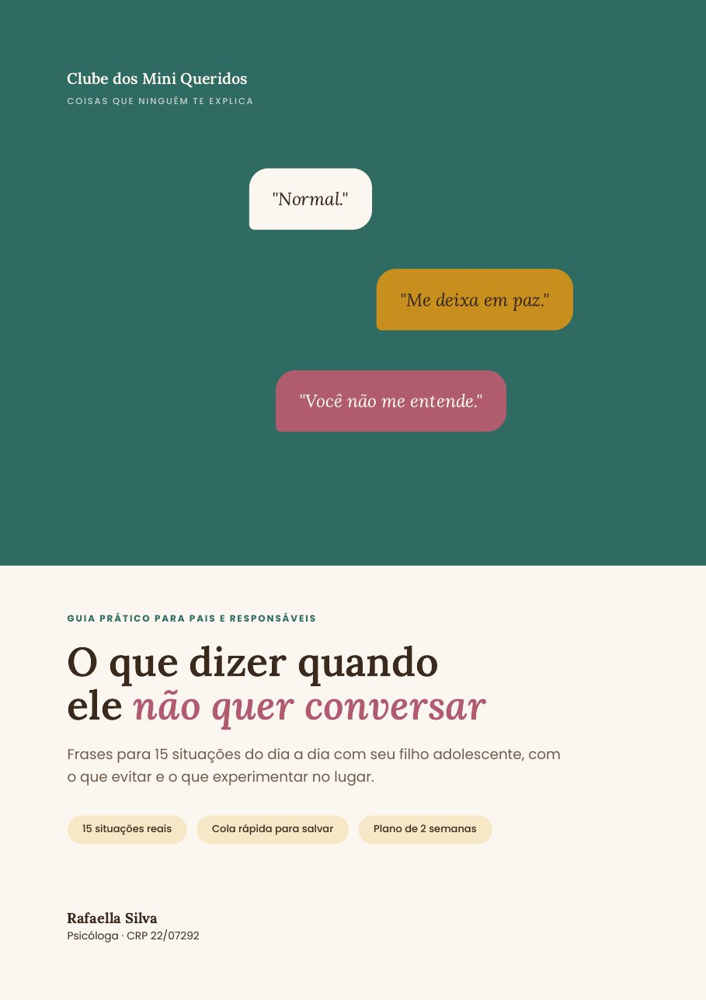
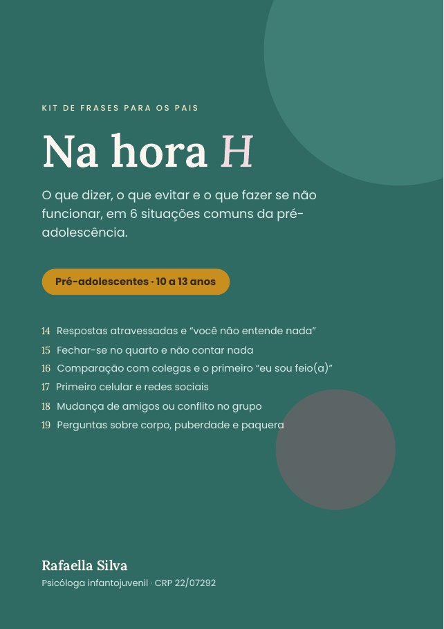

Para os pais · PDFs
Comunicação com filhos pré-adolescentes e adolescentes
Materiais em PDF sobre como conversar com o seu filho nas situações difíceis do dia a dia: o que costuma estar por trás do comportamento, o que evitar e o que dizer no lugar.
R$27pagamento único
Quero os materiais